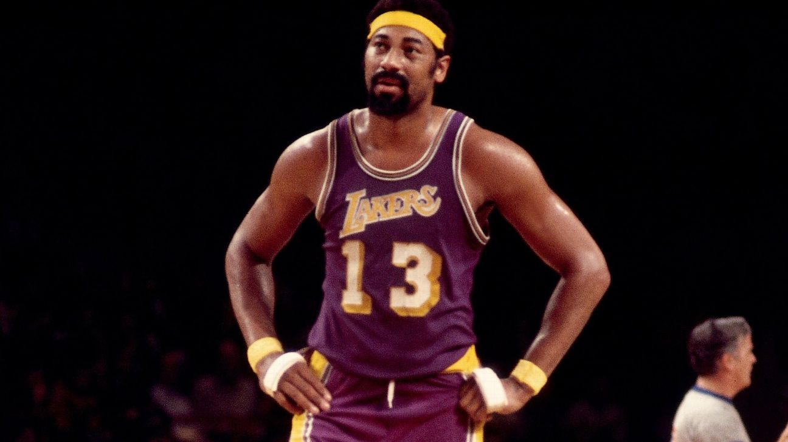

Wilt Chamberlain "The Big Dipper"

"The only way to stop me is to kill me. Once I get the ball, you're at my mercy." - Wilt Chamberlain
Wilt Chamberlain's Career
Dominance in the NBA
- 1959 NBA Draft: Territorial pick by the Philadelphia Warriors.
- Rookie of the Year: 1960.
- Scoring Title: Won seven consecutive scoring titles (1960-1966).
- 100 Point Game: Scored an NBA-record 100 points in a single game in 1962.
The 76ers & Lakers Years
- NBA Championships: 1967 with the Philadelphia 76ers, 1972 with the Los Angeles Lakers.
- Rebounding Titles: Led the NBA in rebounds 11 times.
- MVP Awards: Four-time MVP (1960, 1966, 1967, 1968).
Statistical Greatness
- All-Star Appearances: 13-time NBA All-Star.
- Single Season Records: Holds numerous records including most points in a season (4,029).
Legacy Beyond the Court
- Trailblazer for Statistical Achievements.
- Hall of Fame: Inducted into the Naismith Memorial Basketball Hall of Fame in 1979.
Chamberlain's Legacy
Wilt Chamberlain's impact on the game of basketball is monumental, redefining what it means to be a dominant center.
He is celebrated not just for his athletic performance, but also for his role in transforming the professional landscape of the NBA.